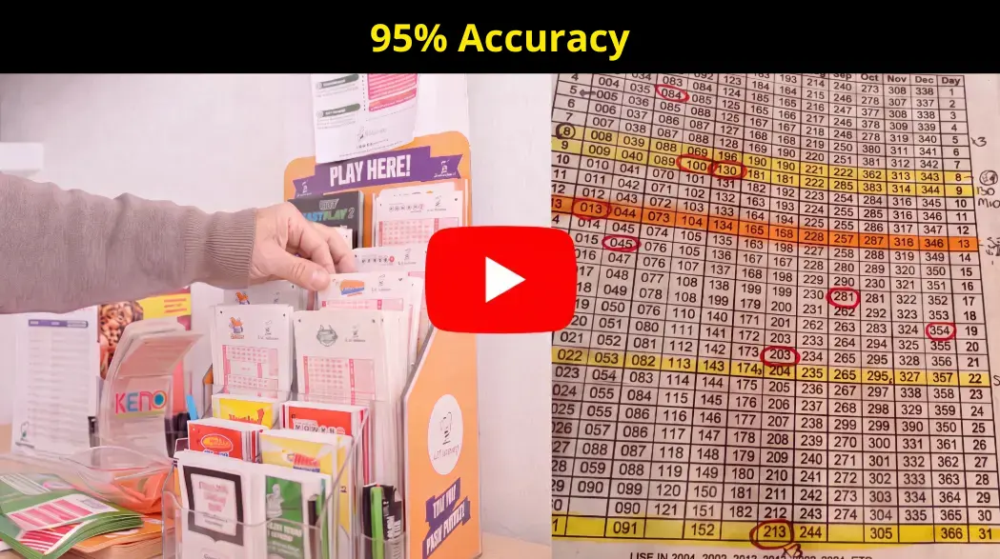

Watch the Presentation >>Editorial · Updated July 2026
The letters below describe how readers organize their Powerball picks after watching the presentation. Individual experiences may vary—no outcome is guaranteed.
“I used to grab a Quick Pick at the gas station without giving it a second thought. Now, I write down every combination I play, keep everything organized, and choose my numbers for a reason. It completely changed my relationship with the game.”
— Marcus R., 58 · Texas“The frequency charts were the part that surprised me the most. I had been playing the same numbers for nine years and had never looked at the actual data behind the drawings.”
— Dana K., 46 · Florida“I still play with the same budget as before—the difference is that now I know exactly what I’m playing and why. It feels like a hobby with a system instead of a coin toss.”
— Tyler S., 62 · OhioIt is a statistical routine for organizing lottery picks, explained step by step in the full presentation: frequency analysis, structured number generation, and wheeling systems applied to major U.S. lotteries.
The presentation compares the method with the two most common alternatives — Quick Picks and fixed “lucky numbers” — and explains, point by point, what sets a routine, data-driven framework apart. The differences are covered in detail in the full Summary.
No — and be wary of anyone who says otherwise. Every lottery drawing is random, and no tool can change the odds. What does the method do? It organizes how you choose, track, and manage your plays instead of leaving everything to guesswork.
The presentation covers the five major U.S. draw games: Powerball, Mega Millions, Cash4Life, Lucky for Life, and Lotto America — with live jackpots and drawing times for each one.
No. This is an independent analysis and organization tool. Tickets are always purchased through official lottery retailers in your state—the presentation never asks you to purchase tickets through the service.
Access to the presentation may change over time. If this page is still online, the full presentation is available to watch today.
No. This is an independent publication and software tool. It is not affiliated with, endorsed by, or connected to Powerball, Mega Millions, or any state or multistate lottery organization.
Yes. Lottery play is restricted to adults—eighteen or older in most states and nineteen or twenty-one in certain jurisdictions. This overview and the presentation are intended only for adults who are legally eligible to play.
Watch the full presentation first. It explains the steps in order and what you need to know before organizing your first play. Everything begins with the button on this page.
No. The presentation is free to watch, and no sign-up is required to watch.
Individual results vary, and nothing here is guaranteed. Any purchase terms—including the thirty-day money-back guarantee—are clearly explained within the presentation before you make any decision.
Yes. No name, email address, or personal information is required to watch the presentation. See the Privacy Policy linked at the bottom of this page for more details.
It is short enough to watch in one sitting—most readers finish it in well under half an hour. For the best experience, watch from the beginning with the sound on.
About This Presentation
An editorial overview of the presentation—a statistical analysis and organization tool for U.S. lottery players. Its purpose is to explain what the method is, where it comes from, and to help you decide whether the full presentation is worth your time.
This is not financial or gambling advice. No statistical method can change the odds of a drawing or guarantee a prize. Individual results vary, and the lottery should never be treated as a way to make money or as a source of income.
Lottery games are only for adults who are legally eligible to play—eighteen or older in most states. Set a budget and stick to it. If gambling stops being fun, stop playing.